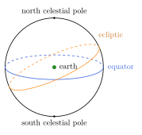
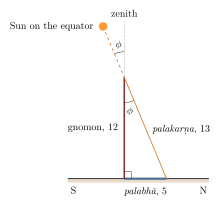

Chapter 6: The Siddhānta: Cycles, Mean Motions, Sines and the Sphere¶
6.1 What a Siddhānta Contains¶
A siddhānta (“established conclusion”) is a complete treatise of mathematical astronomy. Although the classical siddhāntas differ in their parameters and details, they share a common plan, which is already clear in the Āryabhaṭīya (499 CE) and is fully developed in Brahmagupta’s Brāhmasphuṭasiddhānta (628) and in the Sūryasiddhānta. The fourteen chapters of the Sūryasiddhānta, as translated by Burgess, give a good picture of the whole (Burgess 1860):
-
mean motions of the planets (madhyamādhikāra);
-
true positions (spaṣṭādhikāra);
-
direction, place and time (tripraśnādhikāra);
-
eclipses of the Moon;
-
eclipses of the Sun (parallax);
-
the projection (drawing) of eclipses (parilekha);
-
conjunctions of the planets;
-
the asterisms and their conjunctions with planets;
-
heliacal risings and settings;
-
the elevation of the Moon’s horns (the appearance of the crescent);
-
the dangerous aspects of the Sun and Moon (pāta);
-
cosmography (bhūgola);
-
the armillary sphere and other instruments;
-
the kinds of time-measure (māna).
Brahmagupta’s work adds chapters on mathematics (arithmetic and algebra, chapters 12 and 18), a long critique of earlier astronomers (chapter 11), and chapters on instruments and on the sphere. The Āryabhaṭīya is far shorter: 121 verses in four parts, of which the first gives the parameters, the second is mathematical, the third deals with time and planetary motion, and the fourth with the sphere and eclipses (Āryabhaṭa 1976).
6.2 The Sūryasiddhānta¶
The Sūryasiddhānta has been the most widely used siddhānta of the last thousand years. It presents itself as a revelation of the Sun to the asura Maya at the end of the Kṛta age, that is, as the ancient teaching of a god. Historically it is a text that was revised over several centuries. Varāhamihira’s “Saura” system (Chapter 5) is an early form of it; the version we have is considerably later. Its parameters, analysed by Billard, fit best around 1000 CE, and its text probably reached its present form between the eighth and eleventh centuries, with later corrections (Billard 1971; Pingree 1981). It was the basis of the “Saura” school of astronomy, dominant in northern India and widely used elsewhere. Burgess’s translation of 1860, made with the help of Indian pandits and with notes by W. D. Whitney, remains a standard reference (Burgess 1860).
6.3 Units of Time¶
The siddhāntas distinguish between “real” (mūrta) time, which can be measured, and “unreal” (amūrta) time, consisting of units too small to measure. The Sūryasiddhānta (1.11–13) begins real time with the prāṇa (“breath”). Since a sidereal day has 21,600 prāṇas, one prāṇa is the time in which the sky turns through one minute of arc; it lasts four seconds of sidereal time. From it are built:
| 6 prāṇas | = | 1 vināḍikā (also called pala) = 24 seconds |
| 60 vināḍikās | = | 1 nāḍikā (ghaṭikā, daṇḍa) = 24 minutes |
| 60 nāḍikās | = | 1 sidereal day |
A muhūrta is two nāḍikās (48 minutes), and thirty muhūrtas make a day. The Purāṇas and other texts give elaborate lists of smaller units (truṭi, lava, nimeṣa, kāṣṭhā, kalā); these lists disagree with one another, and the smallest units are notional. They show an interest in the subdivision of time, not an ability to measure it.
The siddhāntas also distinguish several kinds of day, month and year according to what is being counted (Burgess 1860):
-
the civil day (sāvana), from sunrise to sunrise;
-
the sidereal day (nākṣatra), one rotation of the sky;
-
the lunar day or tithi (cāndra), one-thirtieth of a synodic month;
-
the solar day (saura), the time in which the Sun moves one degree; thirty of them make a solar month, the Sun’s passage through one sign.
The final chapter of the Sūryasiddhānta lists nine “measures” of time, from the human measures just described to the “divine” and “Brahmā” measures of the cosmic cycles.
6.4 Great Cycles and Integer Periods¶
6.4.1 The idea¶
The most distinctive feature of siddhānta astronomy is the way it expresses mean motions. Instead of giving the daily motion of each planet as a fraction, it states how many complete revolutions (bhagaṇas) each planet makes in a very long period, the mahāyuga of 4,320,000 years, and how many civil days that period contains. The mean daily motion of a planet is then simply
At the beginning of the cycle (and, depending on the system, at certain points within it) all the mean planets are assumed to be together at the beginning of Aśvinī. The cycles themselves, and their place in the cosmic chronology of the Purāṇas, are discussed in Chapter 14. Here what matters is their computational function: they make every mean motion an exact ratio of two integers.
6.4.2 The revolution numbers¶
Table 6.1 gives the revolution numbers of Āryabhaṭa and of the Sūryasiddhānta, and the sidereal periods that follow from those of the Sūryasiddhānta (dividing the 1,577,917,828 civil days of its mahāyuga by the number of revolutions). For Mercury and Venus the numbers given are those of their śīghra apex, whose period is the planet’s period around the Sun (Chapter 7); their own mean motion is that of the Sun.
| Body | Āryabhaṭa | Sūryasiddhānta | SS period | Modern |
|---|---|---|---|---|
| Sun | 4,320,000 | 4,320,000 | 365.2588 | 365.2564 |
| Moon | 57,753,336 | 57,753,336 | 27.32167 | 27.32166 |
| Mars | 2,296,824 | 2,296,832 | 686.997 | 686.980 |
| Mercury (śīghra) | 17,937,020 | 17,937,060 | 87.970 | 87.969 |
| Jupiter | 364,224 | 364,220 | 4332.32 | 4332.59 |
| Venus (śīghra) | 7,022,388 | 7,022,376 | 224.699 | 224.701 |
| Saturn | 146,564 | 146,568 | 10765.8 | 10759.2 |
| Moon’s apogee | 488,219 | 488,203 | 3232.1 | 3232.6 |
| Moon’s node (retrograde) | 232,226 | 232,238 | 6794.4 | 6798.4 |
| Civil days | 1,577,917,500 | 1,577,917,828 |
The derived periods agree closely with modern mean values. Two cautions are needed. First, these are mean periods, which can be determined accurately from observations spread over long intervals; they say nothing about how well the models reproduce the actual, irregular motion of a planet. Second, the agreement for the sidereal year is less impressive than it looks: the siddhānta year of about 365.2588 days is some 3.5 minutes longer than the true sidereal year, and about 24 minutes longer than the tropical year. Because the Indian calendar is tied to this sidereal year, its seasons have slowly drifted (Chapter 13).
Other combinations follow from the same numbers. The synodic month of the Sūryasiddhānta is \(1{,}577{,}917{,}828 / (57{,}753{,}336 - 4{,}320{,}000) = 29.530588\) days, against a modern mean value of 29.530589 days; its draconic month (relative to the node) is 27.21225 days, against 27.21222 days.
Āryabhaṭa’s cycles and the conjunction at the Kali epoch
Āryabhaṭa divided his mahāyuga into four equal quarters of 1,080,000 years, unlike the Purāṇic ratio 4:3:2:1. All his revolution numbers for the Sun, Moon and planets are divisible by four. As a result, the mean Sun, Moon and planets return to conjunction at the beginning of every quarter, and in particular at the beginning of the present Kali age. The integer structure of his parameters was designed so that the computation could start from a simple configuration.
6.4.3 Mean daily motions¶
Dividing each revolution number by the number of civil days and multiplying by \(360^\circ\) gives the mean daily motion (madhyamagati) of each body. Table 6.2 gives these motions for the Sūryasiddhānta, computed from its parameters and written in sexagesimal form (degrees; minutes, seconds, thirds), as the texts and handbooks express them.
| Body | Daily motion | Degrees per day |
|---|---|---|
| Sun | 0;59,8,10 | 0.98560 |
| Moon | 13;10,34,52 | 13.17635 |
| Mars | 0;31,26,28 | 0.52402 |
| Mercury (śīghra) | 4;5,32,21 | 4.09232 |
| Jupiter | 0;4,59,9 | 0.08310 |
| Venus (śīghra) | 1;36,7,44 | 1.60215 |
| Saturn | 0;2,0,23 | 0.03344 |
| Moon’s apogee | 0;6,40,59 | 0.11138 |
| Moon’s node (retrograde) | 0;3,10,45 | 0.05298 |
6.4.4 Counting days: the ahargaṇa¶
To find a planet’s mean position on a given date, the astronomer first computes the number of civil days elapsed since the epoch, the ahargaṇa (“heap of days”). In the siddhāntas the usual epoch is the beginning of the Kali age, which by the conventional reckoning fell at midnight or at sunrise (depending on the school) on 17/18 February 3102 BCE (Julian calendar), at the meridian of Ujjayinī. The ahargaṇa is computed from the elapsed solar years and months, converted into lunar months and civil days using the period relations of the system, with corrections for intercalary months and omitted tithis. The mean longitude is then
where \(A\) is the ahargaṇa, \(R\) the planet’s revolutions and \(D\) the civil days of the cycle, and \(\lambda_0\) any position at the epoch. Handbooks (karaṇas) simplified the work by starting from a recent epoch and giving the mean positions at that epoch, so that the numbers involved were small. Chapter 12 works through a complete day-count by these rules.
The computed time is that of the prime meridian. For any other place the astronomer applied a correction for the difference in longitude (deśāntara), found from the distance to the meridian and the size of the earth. The prime meridian of Indian astronomy passes through Laṅkā, a notional point on the equator (not the island of Sri Lanka), and through Ujjayinī; the Sūryasiddhānta names other places on it, such as Rohitaka and Kurukṣetra.
Example 6.1 (The correction for terrestrial longitude)
Suppose an almanac is computed for Ujjayinī and is to be used at a place about \(7^\circ\) east of the prime meridian (roughly the longitude of Vārāṇasī). Since the earth turns \(360^\circ\) in a day, \(7^\circ\) of longitude corresponds to \(7/360\) of a day, about 28 minutes, or 70 vināḍikās. Local midnight at the eastern place comes 28 minutes before midnight at Ujjayinī, and in that time the Moon moves about \(13.2^\circ \times 28/1440 \approx 0.26^\circ\), or \(15'\). The Moon’s computed position at local midnight must therefore be reduced by about \(15'\), and the Sun’s by about \(1'\). The siddhāntas obtained the difference in longitude from the distance in yojanas between the place and the prime meridian, measured along the parallel of latitude, or from the difference between the computed and observed times of a lunar eclipse, which is seen at the same moment everywhere.
The Kali epoch itself was not observed: the grand conjunction of the mean planets at that moment follows from the period relations, from which the date was computed backwards. How European scholars first argued over this point is told in Section 16.4.1.
6.4.5 Correcting the parameters¶
Mean motions derived from integer revolutions cannot remain accurate for ever. From the seventh century onwards astronomers applied small corrections, called bīja (“seed”), to the revolution numbers of a standard text to bring its predictions into agreement with observation in their own time. The best-known bīja corrections are those applied to the Sūryasiddhānta and to the Āryabhaṭa system in the fifteenth and sixteenth centuries. Different schools (pakṣas) are distinguished by their parameters: the Brāhma school following Brahmagupta, the Ārya school following Āryabhaṭa, the Ārdharātrika school following Āryabhaṭa’s lost midnight system, and the Saura school following the Sūryasiddhānta (Pingree 1978). Chapter 9 returns to them.
6.5 Trigonometry: The Sine¶
6.5.1 From chord to half-chord¶
Greek astronomers computed with the chord of an arc. Indian astronomers, from the earliest surviving siddhāntas onwards, used the half-chord, which is the sine of modern trigonometry multiplied by the radius of the circle. They called it ardhajyā (“half bowstring”), or simply jyā or jīvā. They also used the cosine (koṭijyā, the half-chord of the complementary arc) and the versed sine (utkramajyā, \(R - R\cos\theta\)). The adoption of the half-chord, which makes the relations in right-angled triangles direct, is one of the most important Indian contributions to mathematics. The Arabic jīb, a transliteration of jīvā, became Latin sinus and our “sine” (Chapter 16).
Indian texts usually work not with the sine of modern mathematics (a ratio) but with a length, the Sine of an arc in a circle of chosen radius \(R\):
Āryabhaṭa and the Sūryasiddhānta take \(R = 3438'\). This is the number of minutes of arc in a radian: a circle of circumference \(21{,}600'\) (that is, \(360^\circ\)) has a radius of \(21{,}600/2\pi \approx 3437.75'\). With this choice an arc and its Sine are measured in the same unit, and for small arcs they are nearly equal.
6.5.2 The table of Sines¶
Both Āryabhaṭa and the Sūryasiddhānta give Sines for 24 arcs at intervals of \(225'\) (\(3^\circ 45'\)), from \(225'\) to \(5400'\) (\(90^\circ\)). Āryabhaṭa gives them as differences, in a single verse of his alphabetic notation; the Sūryasiddhānta gives the Sines themselves. The values agree with the modern values to within about one unit (Table 6.3).
| No. | Arc | Sine | \(3438\sin\theta\) | No. | Arc | Sine | \(3438\sin\theta\) |
|---|---|---|---|---|---|---|---|
| 1 | 225 | 225 | 224.86 | 13 | 2925 | 2585 | 2584.83 |
| 2 | 450 | 449 | 448.75 | 14 | 3150 | 2728 | 2727.55 |
| 3 | 675 | 671 | 670.72 | 15 | 3375 | 2859 | 2858.59 |
| 4 | 900 | 890 | 889.82 | 16 | 3600 | 2978 | 2977.40 |
| 5 | 1125 | 1105 | 1105.11 | 17 | 3825 | 3084 | 3083.45 |
| 6 | 1350 | 1315 | 1315.67 | 18 | 4050 | 3177 | 3176.30 |
| 7 | 1575 | 1520 | 1520.59 | 19 | 4275 | 3256 | 3255.55 |
| 8 | 1800 | 1719 | 1719.00 | 20 | 4500 | 3321 | 3320.85 |
| 9 | 2025 | 1910 | 1910.05 | 21 | 4725 | 3372 | 3371.94 |
| 10 | 2250 | 2093 | 2092.92 | 22 | 4950 | 3409 | 3408.59 |
| 11 | 2475 | 2267 | 2266.83 | 23 | 5175 | 3431 | 3430.64 |
| 12 | 2700 | 2431 | 2431.03 | 24 | 5400 | 3438 | 3438.00 |
6.5.3 How the table was made¶
Āryabhaṭa states a rule (Āryabhaṭīya, Gaṇitapāda 12) for generating the successive Sine differences: each difference is less than the preceding one by the preceding Sine divided by the first Sine (225). In modern notation, if \(\Delta_k\) is the \(k\)-th difference and \(S_k\) the \(k\)-th Sine,
The rule expresses the fact that the second differences of the Sine are proportional to the Sine itself, with the opposite sign. The exact factor for this interval is \(2(1-\cos 3^\circ 45') \approx 1/233.5\) rather than \(1/225\), so the rule is an approximation, which Āryabhaṭa’s successors refined. The rule is often compared with the differential equation \(y” = -y\) satisfied by the sine; it is better understood as a finite-difference property of the table, which later Kerala astronomers analysed further (Plofker 2009).
Bhāskara I, in his Mahābhāskarīya (early seventh century), gave a remarkable rule for computing the Sine without a table. In modern terms, for an arc \(\theta\) in degrees,
which is never in error by more than about \(0.0016\) between \(0^\circ\) and \(180^\circ\). Brahmagupta’s rule for interpolating in the table with second differences is given in Section 6.11. The mathematical side of Indian trigonometry, including the infinite series of the Kerala school, is treated in Volume 11.
6.6 The Sphere: Direction, Place and Time¶
6.6.1 The celestial sphere¶
The siddhāntas place a spherical earth, at rest, at the centre of the universe, surrounded by the spheres of the Moon, Mercury, Venus, the Sun, Mars, Jupiter, Saturn and the fixed stars, in that order of distance. (Āryabhaṭa alone made the earth rotate; see Chapter 9.) The celestial sphere turns westward once a sidereal day about the poles; the Sun, Moon and planets move slowly eastward along the ecliptic. The angle between the ecliptic and the equator, the obliquity, is given as \(24^\circ\) by Āryabhaṭa, Brahmagupta and the Sūryasiddhānta; its true value around 500 CE was about \(23^\circ 38'\).

6.6.2 Some fundamental rules¶
The chapter on “direction, place and time” solves problems of spherical astronomy by rules equivalent to the formulae of modern spherical trigonometry, though stated with Sines, proportions and right triangles. A few examples, written in modern notation with \(\phi\) the observer’s latitude, \(\epsilon\) the obliquity, \(\lambda\) the Sun’s longitude, \(\delta\) its declination and \(H\) its hour angle:
-
Declination of a point of the ecliptic:
\[\sin\delta = \sin\epsilon\,\sin\lambda .\tag{6.6}\] -
Ascensional difference (cara), the amount by which half the day differs from six hours (fifteen nāḍikās):
\[\sin(\text{cara}) = \tan\phi\,\tan\delta .\tag{6.7}\] -
Altitude \(a\) of the Sun:
\[\sin a = \sin\phi\,\sin\delta + \cos\phi\,\cos\delta\,\cos H .\tag{6.8}\] -
Rising times of the signs at the equator (laṅkodaya) and at the observer’s latitude (svadeśodaya), needed to find the ascendant and to convert between time and longitude.
Example 6.2 (Declination and length of day with the Sine table)
To find the Sun’s declination when its longitude is \(60^\circ\) (the end of Vṛṣabha), the astronomer multiplies the Sine of the longitude, 2978 (Table 6.3), by the Sine of the greatest declination, \(24^\circ\), which the Sūryasiddhānta gives as 1397, and divides by the radius:
In the table, 1210 lies between the Sines 1105 (arc \(1125'\)) and 1315 (arc \(1350'\)); interpolating linearly, the arc is about \(1125' + \frac{1210 - 1105}{210} \times 225' \approx 1238'\), or \(20^\circ 38'\). The modern formula \(\sin\delta = \sin 24^\circ \sin 60^\circ\) gives \(20^\circ 37'\).
At Ujjayinī (latitude about \(23^\circ 11'\)), the ascensional difference for this declination follows from \(\sin(\text{cara}) = \tan\phi\tan\delta \approx 0.428 \times 0.376 = 0.161\), so that the cara is about \(9^\circ 16'\) of the equator, or about 37 minutes of time. Half the day is then \(6^{\text{h}} + 37^{\text{m}}\), and the whole day about 13 hours 14 minutes, ignoring refraction and the size of the Sun’s disc.
6.6.3 The rising times of the signs¶
Because the ecliptic is inclined to the equator, equal arcs of the ecliptic take unequal times to rise above the horizon. At the equator (“at Laṅkā”) the rising time of a sign equals the difference of the right ascensions of its beginning and end. The Sūryasiddhānta gives these rising times in prāṇas (one prāṇa corresponds to one minute of arc of the equator, or four sidereal seconds): 1670 for Meṣa, 1795 for Vṛṣabha and 1935 for Mithuna, the same three numbers in reverse order for the next three signs, and so on symmetrically around the circle (Burgess 1860). The three numbers add up to 5400, a quarter of the 21,600 prāṇas of a sidereal day. Computing the same quantities today with an obliquity of \(24^\circ\) gives about 1669, 1794 and 1938 prāṇas, so the tabulated values are accurate to a few units.
At a place in latitude \(\phi\), the signs of the northern half of the ecliptic rise more slowly and those of the southern half more quickly. The texts obtain the local rising times (svadeśodaya) by subtracting from, or adding to, the equatorial rising times the corresponding parts of the ascensional difference (cara), computed for the latitude of the place. Tables of local rising times are the basis of the computation of the ascendant (lagna) used in horoscopes and of the conversion of time into ecliptic longitude.
| Signs | Sūryasiddhānta | Computed |
|---|---|---|
| Meṣa, Kanyā, Tulā, Mīna | 1670 | 1669 |
| Vṛṣabha, Siṃha, Vṛścika, Kumbha | 1795 | 1794 |
| Mithuna, Karka, Dhanus, Makara | 1935 | 1938 |
6.6.4 The gnomon and the latitude¶
The basic instrument of these chapters is the gnomon (śaṅku), conventionally 12 aṅgulas (“digits”) high, set up on level ground (Chapter 11). The length of its shadow at noon on an equinox, the palabhā or “equinoctial shadow”, gives the latitude:
From the shadow at any hour, together with the Sun’s declination, the astronomer could find the time of day; conversely, from the time he could predict the shadow. The east–west line was found by the old method of the circle and the two shadow tips (Chapter 3). Texts give long series of such problems, and their solutions are among the most elaborate trigonometry of the siddhāntas (Plofker 2009).
6.6.5 Shadow problems: the latitude triangles and a worked example¶
The chapter on the “three questions” (tripraśna: direction, place and time) is built on one figure. At noon on an equinox the Sun stands on the equator, so its distance from the zenith equals the latitude, and the gnomon, its shadow and the line from the tip of the gnomon to the tip of the shadow form a right triangle with the angle \(\phi\) at the top (Figure 6.2). The gnomon is 12 aṅgulas, the equinoctial shadow (palabhā or akṣabhā) is \(s_0\), and the hypotenuse, the “equinoctial hypotenuse” (palakarṇa or akṣakarṇa), is \(\sqrt{144 + s_0^2}\).

The latitude triangles.
Many other right triangles in the sphere have the same angles as this one, and the astronomers exploited the similarity systematically. Writing \(R\) for the radius of the Sine table (3438) and naming the sides as the texts do, the following are proportional to gnomon, shadow and hypotenuse:
-
the Sine of the co-latitude (lambajyā), the Sine of the latitude (akṣajyā) and the radius \(R\), so that \(\textit{akṣajyā} = R\,s_0/\textit{palakarṇa}\);
-
the Sine of the Sun’s declination (krāntijyā), the “earth-sine” (kujyā, the ascensional difference measured as a line in the plane of the Sun’s diurnal circle) and the Sine of the amplitude (agrā), the angular distance of the rising point from the east point, so that \(\textit{kujyā} = \textit{krāntijyā}\times s_0/12\) and \(\textit{agrā} = \textit{krāntijyā}\times\textit{palakarṇa}/12\).
Bhāskara II collects such triangles under the name “latitude figures” (akṣakṣetra) and uses them as a kind of master key: whenever three of the quantities are known, a rule of three gives the fourth. The method is equivalent to plane trigonometry applied to well-chosen sections of the sphere, and it explains why so many rules of the tripraśna have the form of a single proportion (Plofker 2009; Burgess 1860).
A worked example.
Take a place where the equinoctial shadow is 5 aṅgulas, so that the equinoctial hypotenuse is exactly 13 (the latitude is \(22^\circ 37'\), close to that of Kolkata). Then
Let the Sun’s tropical longitude be \(30^\circ\). Its krāntijyā is \(1397 \times \operatorname{Sin}30^\circ / 3438 = 698\tfrac{1}{2}\), a declination of \(11^\circ 43'\) north. The “day-radius” (dyujyā), the radius of the Sun’s diurnal circle, is \(\sqrt{3438^2 - 698.5^2} \approx 3366\). From the latitude triangles:
-
kujyā \(= 698.5 \times 5/12 \approx 291\), and the Sine of the ascensional difference, carajyā \(= 291 \times 3438/3366 \approx 297\). The arc is about \(298\) prāṇas (\(4^\circ 58'\)), or \(49\tfrac{2}{3}\) palas, so the half-day is 15 ghaṭikās \(49\tfrac{2}{3}\) palas and the whole day about 31 ghaṭikās 39 palas (12 hours 40 minutes);
-
agrā \(= 698.5 \times 13/12 \approx 757\), an amplitude of \(12^\circ 43'\): the Sun rises that far north of the east point, which the astronomer needs in order to check the east–west line or to orient a building on a given day;
-
at noon the Sun’s distance from the zenith is \(22^\circ 37' - 11^\circ 43' = 10^\circ 54'\), so the noon shadow is \(12\tan 10^\circ 54' \approx 2.3\) aṅgulas, pointing north.
The inverse problem: time from a shadow.
The most frequent practical question ran the other way: the shadow has been measured; what time is it? Suppose that on the same day, in the morning, the shadow is found to be exactly as long as the gnomon, 12 aṅgulas. Then the hypotenuse of the shadow (chāyākarṇa) is \(\sqrt{144 + 144} \approx 16.97\), and the Sine of the Sun’s altitude (also called śaṅku, the “great gnomon”) is \(12 \times 3438/16.97 \approx 2431\), an altitude of \(45^\circ\). The texts then enlarge this Sine in the ratio \(R\) : lambajyā and again in the ratio \(R\) : dyujyā, which gives \(2431 \times \frac{3438}{3174} \times \frac{3438}{3366} \approx 2689\tfrac{1}{2}\); from this they take away the carajyā, 297, leaving about \(2392\tfrac{1}{2}\), the Sine of about \(44^\circ 06'\). This is the arc of the diurnal circle that the Sun has climbed above the six-o’clock circle; adding the ascensional difference, \(4^\circ 58'\), gives \(49^\circ 04'\) since sunrise, that is about 8 ghaṭikās 11 palas, or 3 hours 16 minutes. In modern notation the procedure is the solution of equation (6.8) for the hour angle \(H\):
where the first term is the enlarged Sine and the second is the Sine of the ascensional difference, both divided by \(R\). The modern formula gives the same result: \(H = 45^\circ 54'\) from noon, and the time since sunrise \(94^\circ 58' - 45^\circ 54' = 49^\circ 04'\).
Two points emerge from the example. The gnomon was a clock as well as a direction-finder, and the long shadow chapters of the siddhāntas are, in effect, the theory of a sundial that could be set up anywhere with a stick and a level floor. And every step depends on the equinoctial shadow, the one local constant that a practitioner had to measure, or read from a list of towns, before the rules could be applied; this is why texts and almanacs record the palabhā of the places for which they compute.
6.7 The Shape and Size of the Earth¶
From Āryabhaṭa onwards the siddhāntas teach that the earth is a sphere, suspended in space without support. Āryabhaṭa states that it is round on all sides, covered with living beings, like the bulb of a kadamba flower with its blossoms. The Sūryasiddhānta (12.32) says that the earth stands in the middle of the cosmic egg, in the sky, holding itself by the supporting power of Brahman. This is a statement, in religious terms, about why the earth does not fall. Brahmagupta and, later, Bhāskara II explained the falling of heavy objects to the earth by an attracting power or nature of the earth (Section 9.6).
The siddhāntas give the size of the earth in yojanas. Āryabhaṭa gives a diameter of 1050 yojanas, and the Sūryasiddhānta a diameter of 1600 yojanas, from which it computes the circumference as \(1600\sqrt{10} \approx 5059\) yojanas. The length of the yojana varied from text to text and is not known precisely, so modern conversions of these figures into kilometres (and claims that they match the modern value) depend on the length assumed. What can be said is that the siddhāntas had a spherical earth of a definite size, used in computing parallax and the correction for terrestrial longitude.
6.8 The Sizes of the Sun and Moon¶
For eclipses and parallax the siddhāntas need the sizes and distances of the Sun and Moon. Āryabhaṭa gives the diameters of the earth, Sun and Moon as 1050, 4410 and 315 yojanas; the Sūryasiddhānta gives 1600, 6500 and 480 yojanas (Āryabhaṭa 1976; Burgess 1860). Both thus make the Sun about four times the size of the earth and the Moon about three-tenths of it. The modern ratios are very different: the Sun’s diameter is about 109 times the earth’s, the Moon’s about 0.27 times. The Moon’s distance, found from its parallax, was estimated reasonably well, in the region of sixty earth-radii (the modern mean distance is about 60.3 earth-radii); the Sun’s distance, whose parallax is far too small to be measured with the naked eye, was greatly underestimated, as it was by Greek and Islamic astronomers. In the siddhāntas the Sun’s distance follows from the principle of equal linear velocities (Chapter 7), not from measurement. The apparent diameters of the Sun and Moon, about half a degree each, were well known, and they are what matter for eclipse computation.
6.9 Precession¶
The precession of the equinoxes, the slow westward motion of the equinoxes among the stars, is not discussed by Āryabhaṭa or Brahmagupta. The Sūryasiddhānta (3.9–12) describes a “libration” of the starry sphere: the equinoctial point moves back and forth through \(27^\circ\) on either side of the beginning of Aśvinī, completing 600 such oscillations in a mahāyuga. An oscillation therefore takes 7200 years and covers \(108^\circ\), a mean rate of \(54”\) a year. Theories of oscillating precession (“trepidation”) were also held by some Islamic and medieval European astronomers; the true precession is a steady motion of about \(50.3”\) a year, completing a circuit in about 25,800 years.
According to Bhāskara II, Muñjāla (932) gave 199,669 revolutions of the solstices in a kalpa of 4,320 million years, a steady rate of about \(59.9”\) a year. Bhāskara II reports this value alongside the oscillation of the Sūryasiddhānta (Bhāskara II 1861). In practice, Indian almanac-makers have dealt with precession by the ayanāṃśa, the correction between the sidereal and tropical longitudes (Chapter 4).
6.10 Corrections to Time¶
The siddhāntas know that the interval between successive sunrises is not constant. They correct the computed time for two effects. The first, bhujāntara, arises from the Sun’s unequal motion along the ecliptic (its equation of centre). The second, udayāntara, arises from the inclination of the ecliptic to the equator, which makes equal arcs of longitude rise in unequal times; it was introduced into the computation of mean positions by Bhāskara II. Together they correspond to what is now called the equation of time (Plofker 2009).
6.11 The Astronomer’s Computational Tools¶
Indian mathematics grew up largely inside astronomy: the Āryabhaṭīya devotes one of its four parts to mathematics, Brahmagupta’s Brāhmasphuṭasiddhānta has two mathematical chapters, and Bhāskara II’s Līlāvatī and Bījagaṇita were treated as parts of his Siddhāntaśiromaṇi. That mathematics, which went far beyond astronomical needs, is the subject of Volume 11. This section describes only the tools that the astronomer used every day, with small worked examples, so that the procedures described in this and the following chapters can be followed in detail (Plofker 2009; Datta and Singh 1962). Besides the Sine, the most constant of them was the right triangle, whose sides are the bhujā (“arm”), the koṭi (“upright”) and the karṇa (“ear”, the hypotenuse); most problems of spherical astronomy were solved not with spherical triangles but by finding plane right triangles inside the sphere and applying proportions between their sides, as the commentaries explain.
6.11.1 Sexagesimal arithmetic and units¶
Positions on the ecliptic were expressed in signs (rāśis) of \(30^\circ\), degrees (aṃśas or bhāgas), minutes (kalās or liptās) and seconds (vikalās); time in days, nāḍikās and vināḍikās. Whole numbers were written decimally, while fractions were usually sexagesimal, so that a longitude might be written as 4 signs \(13^\circ 25' 40”\), that is, \(133^\circ 25' 40”\).
Example 6.3 (Sexagesimal multiplication)
The Sun’s mean daily motion in the Sūryasiddhānta is about \(0;59,8\) degrees, that is, \(59'\,8”\) (Table 6.2). In 30 days the mean Sun moves \(30 \times 8” = 240” = 4'\) and \(30 \times 59' = 1770'\), together \(1774' = 29^\circ 34'\): about half a degree less than a full sign, which is why the solar months average a little more than thirty days.
Lengths were measured in aṅgulas (“finger-breadths”) and distances in yojanas. In the system of Bhāskara II’s Līlāvatī, 24 aṅgulas make a hasta (cubit), 4 hastas a daṇḍa, 2000 daṇḍas a krośa and 4 krośas a yojana; Āryabhaṭa defines his yojana as 8000 “man-heights”. Because the basic units were not standardised, the length of the yojana is uncertain, and modern estimates range roughly between eight and fifteen kilometres. For the gnomon this does not matter, since only the ratio of shadow to gnomon is used; for the size of the earth and the distances of the planets it means that the siddhānta figures cannot be converted into modern units with any confidence (Section 6.7).
6.11.2 The rule of three¶
The most frequently used operation is the “rule of three” (trairāśika), the computation of the fourth term of a proportion from the “argument” (pramāṇa), its “fruit” (phala) and the “requisition” (icchā). Thus: if in the 1,577,917,828 civil days of a mahāyuga (pramāṇa) the Moon makes 57,753,336 revolutions (phala), how many does it make in the 1,863,079 days (icchā) elapsed between the Kali epoch and 1 January 2000? The answer is
and its fractional part, multiplied by 360, gives the Moon’s mean longitude, about \(184.98^\circ\) (Appendix A). Almost every step of a siddhānta computation, from the mean motions to the conversion of time into arc and the corrections for terrestrial longitude, is a rule of three or a chain of them (the “rule of five” and longer rules); the texts also know an “inverse” rule of three for quantities that vary inversely.
6.11.3 Interpolation¶
A table gives values only at intervals. Between two tabulated Sines the simplest method is linear interpolation. Brahmagupta, in his Khaṇḍakhādyaka (665), gave a better rule that takes account of the change in the differences of the table. If \(f_0\) is the tabulated value at the beginning of the interval, \(\Delta_-\) the difference of the preceding interval, \(\Delta_+\) that of the current interval, and \(t\) the fraction of the interval to be added, then
which is equivalent to what is now called second-order interpolation.
Example 6.4 (Interpolating the Sine of \(20^\circ\))
The arc of \(20^\circ\) is \(1200'\). In Table 6.3 the Sines of \(1125'\) and \(1350'\) are 1105 and 1315, so \(\Delta_+ = 210\); the preceding difference is \(\Delta_- = 1105 - 890 = 215\); and \(t = 75/225 = 1/3\). Linear interpolation gives \(1105 + 210/3 = 1175.0\). Brahmagupta’s rule gives \(1105 + \tfrac{1}{3} \times \tfrac{215 + 210}{2} + \tfrac{1}{9} \times \tfrac{210 - 215}{2} \approx 1105 + 70.83 - 0.28 = 1175.6\). The value computed today, \(3438 \sin 20^\circ\), is 1175.9.
6.11.4 Iteration¶
Many problems cannot be solved in one step, because the quantity sought appears on both sides of the equation. When the present tithi ends depends on the Moon’s speed, which depends on its position at the time sought; the middle of a solar eclipse depends on the parallax, which depends on the time. Indian astronomers handled such problems by iteration (asakṛt, “not once”): compute an approximate answer, recompute the quantities that depend on it, and repeat until the answer no longer changes.
Example 6.5 (The end of a tithi)
Suppose that at sunrise the Moon’s elongation from the Sun is \(293^\circ 49'\), so that the 25th tithi (which ends at \(300^\circ\)) has \(6^\circ 11'\) still to run, and that the Moon is gaining on the Sun at \(12^\circ 12'\) a day. A first estimate of the time remaining is \(6^\circ 11' / 12^\circ 12' \approx 0.507\) days. Suppose that recomputing the true positions for that moment gives an elongation of \(299^\circ 53'\) and a relative speed of \(12^\circ\) a day. The remaining \(7'\) take about \(0.010\) days, so the tithi ends about 0.517 days, or 12 hours 24 minutes, after sunrise; a further repetition changes the result only slightly. (The numbers are illustrative.)
Iterative procedures appear in the siddhāntas for the times of tithis and conjunctions, for the contacts of eclipses, for solar parallax and, in some schools, for combining the manda and śīghra corrections (Chapter 7).
6.11.5 The pulveriser¶
The kuṭṭaka or “pulveriser”, first described by Āryabhaṭa, finds a whole number that leaves given remainders when divided by given numbers, by repeated division as in the Euclidean algorithm. In astronomy such problems arise when the positions of several bodies (or the fractional parts of their revolutions) are known and the number of days elapsed since the epoch is sought; Bhāskara I’s commentary on the Āryabhaṭīya contains many such exercises (Shukla 1976). With the large divisors of the period relations, the pulveriser worked by hand was a serious computation. The method and its worked examples are treated in Volume 11.
6.11.6 Approximation and precision¶
Indian astronomers were practical about precision. They used \(\sqrt{10}\) for \(\pi\) when it was convenient (the Sūryasiddhānta computes the earth’s circumference this way) and Āryabhaṭa’s \(3.1416\) when it was not; they replaced a Sine by its arc for small angles, and complicated corrections by simpler approximations in handbooks; they rounded parameters to make computation easier. Gaṇeśa Daivajña’s Grahalāghava dispensed with the Sine table altogether in favour of algebraic approximations (Section 12.3). The test was whether the result agreed with the sky well enough for the purpose in hand: a calendar, an eclipse, a horoscope. Where higher precision was needed, as for the Moon’s position in the almanac, more elaborate methods were developed, culminating in the series and tables of the Kerala school (Chapter 10).
Further Reading¶
Burgess (1860) is still the most complete annotated translation of a siddhānta in English. Āryabhaṭa (1976) give the Āryabhaṭīya; Plofker (2009) explains the trigonometry and spherical astronomy; Montelle and Plofker (2018) describe the tables and their arithmetic; Pingree (1978) gives the parameters of the schools; Datta and Singh (1962) is the classic source-book of the mathematics.